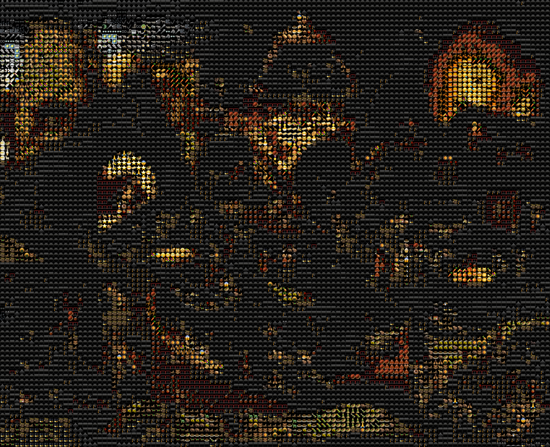
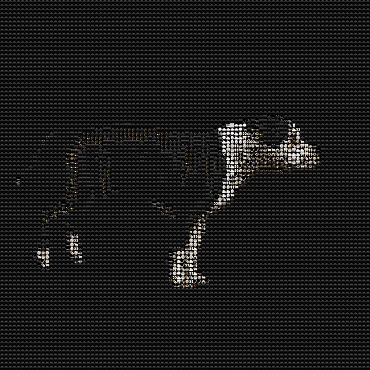
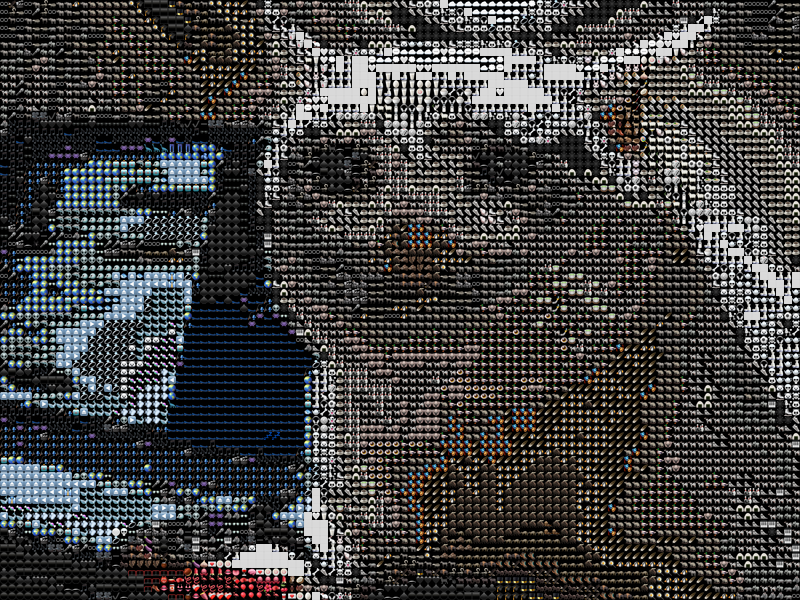

Emojify
A real-time emoji mosaic filter that transforms any webcam feed into a living grid of emojis. Each pixel region is matched to the closest emoji by color and luminance, creating a playful, high-density visual translation of the source image.

Built with WebGL for GPU-accelerated rendering. The system samples the input frame, divides it into a uniform grid, and performs a nearest-neighbor lookup against a pre-computed emoji atlas. The result updates every frame, producing a fluid mosaic that follows motion and lighting changes in real time.


The emoji selection considers both average color and structural contrast within each cell, which helps preserve edges and facial features even at low grid resolutions. The atlas was generated from Apple emoji rendered at 64px, then downsampled for fast texture lookup.
Try Emojify here →